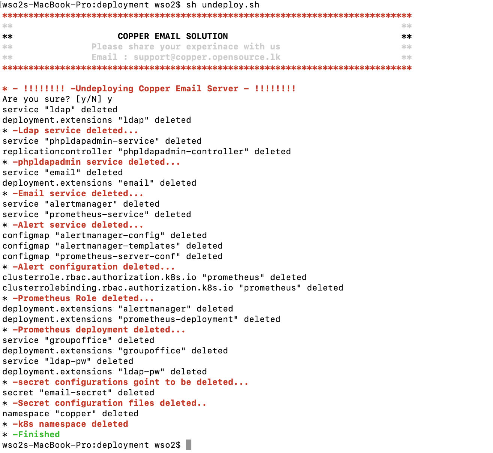

Installation Process¶
Installation¶
This file describe the installation process in detailed for email version 7 and higher. Basically this deployment architecture is consists with kubernetes container orchestration facilites as shown in bellow figure. It consists with some kubernetes services like secrets, ingress and deployments and services etc. So all interfaces can be accessed through a loadbalancer which works as a reverse proxy and all interfaces are https enabled with ingress deployment.

Clone this Repository¶
$ git clone https://github.com/LSFLK/Copper.git
create the following folder in your server¶
/data/ldap/certs
Generate certificate files.¶
This shell file will create necessary self signed certifcate for the system and then those certificates are used to create kubernetes tls secrets.
$ sh certification.sh

Host name change for local installation¶
In localhost deployment for testing perposes it is must to add line for localhost for testing perposes.
$ nano /etc/hosts add following line 127.0.0.1 <you domain name> Ex : 127.0.0.1 copper.opensource.lk
Start the copper-server deployment¶
$ cd Copper/copper-server/kubernetes/deployment/ $ sh deploy.sh
You may have to provide following informaiton while the installation process is going on.¶
Enter mysql database name: Ex : copper Enter mysql database password: Ex : copper Your domain must contain 3 parts. (Eg: part1.part2.part3) Enter the first part of domain: Ex : copper Enter the second part of domain: Ex : test Enter the third part of domain: Ex : lk Enter LDAP admin password: Ex : admin Enter LDAP readonly user name: Ex : raa Enter LDAP readonly user password: Ex : raa Enter organization name Ex : lsf Enter password for spam filter (RspamD) Ex : spam
Ex : Image of running deply.sh

Check kubernetes pods.¶
Then system installation process will begin. It will not take much time to install the system. But it is must to check kubernetes pods whether to know system is installed successfully. All pods status must be "Running".
$kubectl get pods -n copper
Check kubernetes secrets¶
kubectl get secrets -n copper
Following sercrets should have been created.

email-secret Opaque 57 1h tls-certificate kubernetes.io/tls 2 1h tls-dhparam Opaque 1 1h
Check kubernetes services.¶
Further kubernetes services also should be checked. All LoadBalancers External IP should be "localhost" and all nodeport's External IP should be "
$kubectl get services -n copper
## Check kubernetes services.
If services are ok, check using browser whether you can access these interfaces. "copper.opensource.lk" is the domain name you configured in the host file.
Groupoffice
https://copper.opensource.lk/
phpldapadmin
https://copper.opensource.lk/phpldapadmin/
user password change
https://copper.opensource.lk/service/
If you find any issue accessing above urls then just try recreating ingress loadbalancer.
# Delete existing ingress kubectl delete service nginx-ingress -n copper kubectl delete deployment nginx-ingress-controller -n copper # Exicute following command from kubernetes folder to recreate ingress kubectl create -f Ingress/nginx-controller.yaml
Some time it is required to uninstall the system. For that there is a shell script uninstall.sh
$ sh undeploy.sh
Ex : Image of running undeploy.sh
